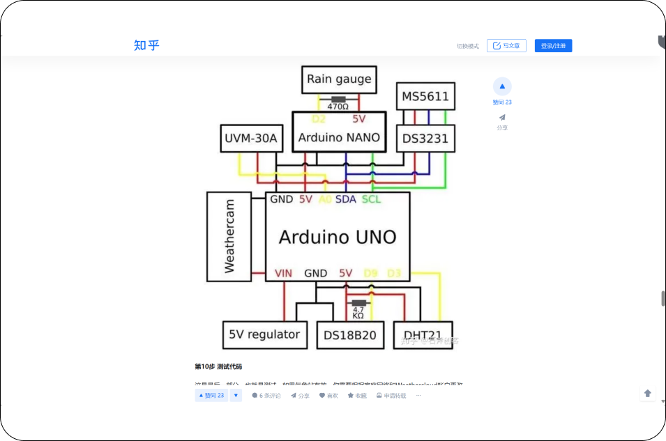
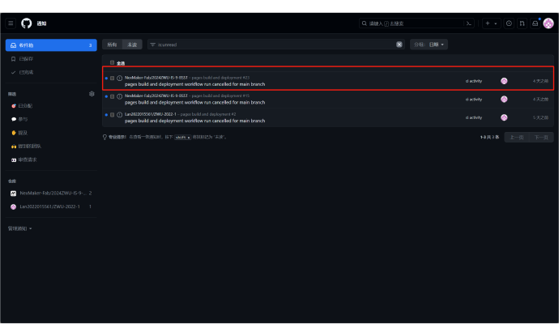

COURSE PRCTICE

ARDUINO
1.Arduino flow light
Tinkercad Attempt



We started using Tinkercad to try and learn about flowing lights.
Understand the operating rules of Nano boards.
3.Flowing light display
2.Arduino makes flowing lights


Code Explanation
Hardware configuration and initialization: PixelCount and PixelPin:
define the number of LEDs on the light strip and the pins they are
connected to. Ensure that these values match your hardware settings.
NeoPixelBus and NeoPixelAnimator: These two libraries provide the necessary functions to control NeoPixel light strips, including color settings, animation, and more.
NeoGamma<NeoGammaTableMethod>colorGamma;: used for color gamma correction to ensure more accurate color display.
Animation parameter: AnimCount: Calculate the number of animations based on the number of LEDs and the number of LEDs covered by each animation. Assuming that each animation affects approximately one-fifth of the LED on the light strip.
PixelFadeDuration: defines the length of time a color fades in and out.
NextPixelMoveDuration: defines the speed of LED movement in an animation, which is the time required to move from one LED to the next.
Animation State Management: MyAnimationState Structure: defines the state of each animation, including the start color, end color, and affected LED index.
NeoPixelAnimator animations (AnimCount);: Create a NeoPixel animation management object to control multiple animations.
AnimationState [AnimCount];: An array that stores all animation states.
Animation logic preparation: frontPixel and frontColor: These two variables will be used to track the index and color of the LED flowing to the front in the animation. Although the complete animation logic is not displayed in the code snippet, these two variables are key to achieving a flowing light effect.
Random Seed Setting (although this part may not be directly related to animation logic): SetRandomSeed() function: used to set the seed for the random number generator. This is very useful for animations that require randomness, such as random color changes. The method of simulating the reading of unconnected pins is used here, combined with bit operations to generate a 31 bit random seed.
NeoPixelBus and NeoPixelAnimator: These two libraries provide the necessary functions to control NeoPixel light strips, including color settings, animation, and more.
NeoGamma<NeoGammaTableMethod>colorGamma;: used for color gamma correction to ensure more accurate color display.
Animation parameter: AnimCount: Calculate the number of animations based on the number of LEDs and the number of LEDs covered by each animation. Assuming that each animation affects approximately one-fifth of the LED on the light strip.
PixelFadeDuration: defines the length of time a color fades in and out.
NextPixelMoveDuration: defines the speed of LED movement in an animation, which is the time required to move from one LED to the next.
Animation State Management: MyAnimationState Structure: defines the state of each animation, including the start color, end color, and affected LED index.
NeoPixelAnimator animations (AnimCount);: Create a NeoPixel animation management object to control multiple animations.
AnimationState [AnimCount];: An array that stores all animation states.
Animation logic preparation: frontPixel and frontColor: These two variables will be used to track the index and color of the LED flowing to the front in the animation. Although the complete animation logic is not displayed in the code snippet, these two variables are key to achieving a flowing light effect.
Random Seed Setting (although this part may not be directly related to animation logic): SetRandomSeed() function: used to set the seed for the random number generator. This is very useful for animations that require randomness, such as random color changes. The method of simulating the reading of unconnected pins is used here, combined with bit operations to generate a 31 bit random seed.
4.some open source projects




The name of the project is to build a tall Weathercloud weather
station in Ardiuno
Advantages: Using the Ardiuno nano board, which is the same as the board used in the previous hardware class, it is better for us to learn to use and operate.
Disadvantages: At present, the hardware knowledge is relatively small, and a lot of learning and practice are still needed. At the same time, the project was just a meteorological device, and we needed to integrate it with our thematic climate action, and as art and technology students, we needed a more aesthetically pleasing and thought-provoking design solution. 。
Advantages: Using the Ardiuno nano board, which is the same as the board used in the previous hardware class, it is better for us to learn to use and operate.
Disadvantages: At present, the hardware knowledge is relatively small, and a lot of learning and practice are still needed. At the same time, the project was just a meteorological device, and we needed to integrate it with our thematic climate action, and as art and technology students, we needed a more aesthetically pleasing and thought-provoking design solution. 。
BSST